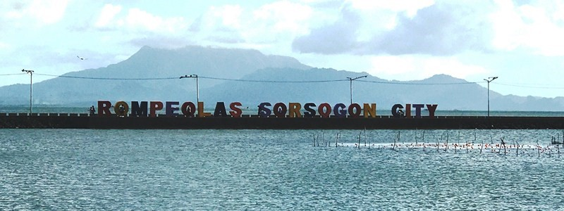

ROMPEOLAS
The Rompeolas is a kilometer-long bay walk with the picturesque views of the sea and Mt. Bulusan across the bay. Rompeolas is a tidy locale for enjoying strolls and on special occasions, such as concerts, this spot provides tourists with plenty of opportunities to watch and interact with Sorsogueños.

If you have kids with you, there is also a playground where kids can enjoy playing and interacting with other kids.

There is also a lot of restaurants nearby where you can enjoy street foods and other merenda meals with friends and family. You can also enjoy eating lunch and dinner in this area. Rompeolas gets really crowded with people anticipating the sunset, which is particularly beautiful in this part of the city. It is also crowded during sunrise, where people exercise to start their day. Rompeolas is one of the tourist spots in Sorsogon you can visit to relax and enjoy yourself. Visit the Rompeolas and see its beauty with your loved ones..
SORSOGON COASTAL ROAD

The completed coastal road with rock causeway and three (3) bridges with a total length of 110.70 lineal meter begins at junction Daang Maharlika traversing several barangays of Sirangan, Sampaloc, Balogo and will eventually connect to barangays Pangpang, Tugos, Cambulaga, and Talisay in Sorsogon City.